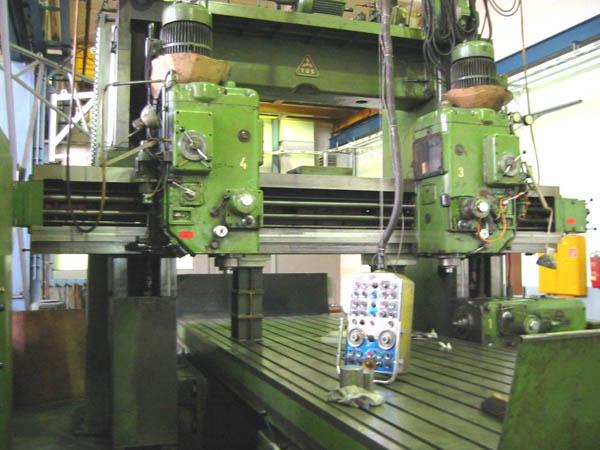
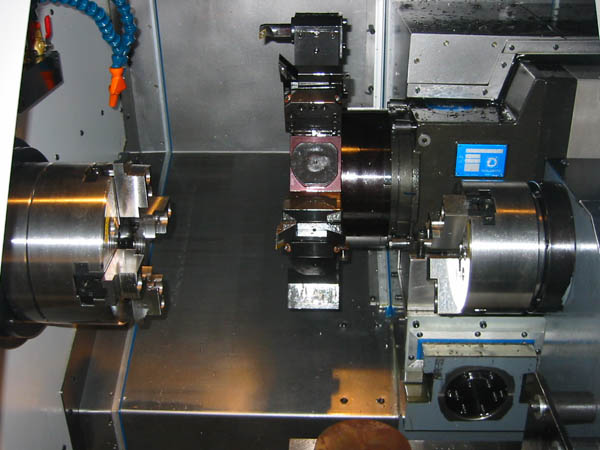

|
ÝÇÝNDEKÝLER
ÖNSÖZ
Günümüzde
tarým ve diðer insan iþ gücü gereksinimini azaltmak ve seri
imalata yani fabrikasyona geçebilmek için makineler ve bu
makineler için takým tezgahlarý tasarlanmýþtýr. Diðer makine
sanayi ve otomotiv sanayinden sonra tarým makineleri imalatýnda
da kullanýlmaya gereksinim duyulmuþtur. Bu tasarýmcýlarýn
amacý baþta da deðindiðimiz gibi insan gücünü daha hýzlý,
güvenilir ve verimli aletlerle deðiþtirmek olmuþtur. Uzun
yýllar bu tezgahlarda köklü bir deðiþiklikler olmamýþtýr.
Ama sürekli bir geliþme kaydedilmiþtir. Çaðýmýz bilgisayar
teknolojisine bürünmesi, metal kesme iþlerinde bir çað açmýþ
olmaktadýr. Bu olay genellikle "Bilgisayar Destekli Nümerik
Kontrol" olarak isimlendirilir. Kýsa adlandýrýlmasý ise CNC'
dýr. Bu tür takým tezgahlarý diðer sanayi kollarýndan sonrada
tarým makineleri sanayine sýçramýþ ve üreticileri bu tezgahlara
yatýrýma sevk etmiþtir. Bu sayede tarým makineleri sanayi
Avrupa standartlarýna yaklaþma eðilimi göstermiþ ve imalatta
seri, hatasýz üretime baþlanmýþtýr. Bu çalýþmamýzda CNC 'nin
tanýtýlmasý, tezgah çeþitleri ve programlama tekniklerine
deðinilecektir.
GÝRÝÞ
CNC
TEZGAHLARININ TARÝHÇESÝ:
Nümerik
kontrol fikri II. Dünya savaþýnýn sonlarýnda ABD hava kuvvetlerinin
ihtiyacý olan kompleks uçak parçalarýnýn üretimi için ortaya
atýlmýþtýr. Çünkü bu tür parçalarýn o günkü mevcut imalat
tezgahlarý ile üretilmesi mümkün deðildi.
Bunun gerçekleþtirilmesi
için PARSONS CORPORATION ve MIT (Massachusetts Institute of
Tecnnology) ortak çalýþmalara baþladý. 1952 yýlýnda ilk olarak
bir CINCINNATTI-HYDROTEL freze tezgahýný Nümerik Kontrol ile
teçhiz ederek bu alandaki ilk baþarýlý çalýþmayý gerçekleþtirdiler.
Bu tarihten itibaren pek çok takým tezgahý imalatçýsý Nümerik
Kontrollü tezgah imalatýna baþladý. Ýlk önceleri NC takým
tezgahlarýnda vakumlu tüpler, elektrik röleleri, komplike
kontrol ara yüzleri kullanýlýyordu.
Ancak bunlarýn sýk sýk
tamirleri hatta yenilenmeleri gerekiyordu. Daha sonralarý
NC takým tezgahlarýnda daha kullanýþlý olan minyatür elektronik
tüp ve yekpare devreler kullanýlmaya baþlandý. Bilgisayar
teknolojisinde ki hýzlý geliþmeler Nümerik Kontrollü sistemleride
etkilemiþtir.
Artýk günümüzde NC tezgahlarda daha ileri düzeyde
geliþtirilmiþ olan entegre devre elemanlarý, ucuz ve güvenilir
olan donanýmlar kullanýlmýþtýr. ROM (Read Only Memory) teknolojisinin
kullanýlmaya baþlanýlmasýyla da programlarýn hafýzada saklanmalarý
mümkün oldu. Sonuç olarak bu sistemli geliþmeler CNC' nin
(Computer Numerical Control) doðmasýna öncülük etmiþtir. CNC
daha sonra torna, matkap vb. takým tezgahlarýnda yaygýn olarak
kullanýlmaya baþlandý.
CNC
NEDÝR?
Bilgisayarlý
Nümerik Kontrol de (Computer Numerical Control) temel düþünce
takým tezgahlarýnýn sayý, harf vb. sembollerden meydana gelen
ve belirli bir mantýða göre kodlanmýþ komutlar yardýmýyla
iþletilmesi ve tezgah kontrol ünitesinin (MCU) parça programýný
edebilen sistemdir.
Bilgisayarlý
Nümeik Kontrol de tezgah kontrol ünitesinin kompütürize edilmesi
sonucu programlarýn muhafaza edilebilmelerinin yanýnda parça
üretiminin her aþamasýnda programý durdurma, programda gerekli
olabilecek deðiþiklikleri yapabilme, programa kalýnan yerden
tekrar devam edebilmeve programý son þekliyle hafýzada saklamak
mümkündür. Bu nedenle programýn kontrol ünitesine birkez yüklenmesi
yeterlidir. Programlarýn tezgaha transferleri delikli kaðýt
þeritler (Punched Tapes), Manyetik Bantlar (Magnetic Tapes)
vb. veri taþýyýcýlar aracýlýðýyla gerçekleþtirilir.
CNC
TAKIM TEZGAHLARI:
CNC
takým tezgahlarýn dan önce NC takým tezgahlarýna özetleyip
CNC tezgahlarýný anlatmaya geçeceði Nümerik Kontrol (NC) metal
ve diðer tür malzemelerin talaþ kaldýrmak suretiyle iþlenmesinde
kullanýlan her türlü takým tezgahýnda yaygýn olarak uygulanmaktadýr.
Bu tezgahlardan bazýlarý þunlardýr:
- Torna
tezgahý (lathe machine)
- Freze
tezgahý (miling machine)
- Matkap
tezgahý (drilling machine)
- Delik
büyütme tezgahý (boring machine)
- Taþlama
tezgahý (grinding machine)

Þekil
1.2 NC takým tezgahlarý
Bütün
NC takým tezgahlarýnýn kendilerine özgü kapasite, operasyon
yetenekleri ve bir takým karakteristik özellikleri vardýr.
Bu nedenle tezgahýn sahip olmadýðý hiçbir iþleme özelliði
o tezgaha yaptýrýlamaz.
NC
takým tezgahlarýnda hafýza bulunmadýðýndan bu tür tezgahlarda
blok verileri sýra ile okunur ve iþleme konulur. Bir iþ parçasýnýn
imalatý esnasýnda tezgahýn kontrol ünitesi (Machine Control
Unit) bir bloktaki bütün verileri okur ve tezgahta gereken
iþlem operasyonlarýný yerine getirir. Operasyonlar tamamlandýktan
sonra bir sonraki bloka geçirilir. Bu iþlem sýrasýyla program
sonuna kadar devam eder.
Parça
programlarý standart kaðýt þerit üzerindeki yer ve diziliþ
þekillerine göre farklý nümerik (sayýsal) ve alfa nümerik
(alfa sayýsal) deðer ve anlamlarý vardýr.
CNC
takým tezgahlarýnýn fiziksel tasarým ve konstrüksiyonlarýn
NC tezgahlarýn aynýdýr. Ancak NC takým tezgahlarýnda yapýlmalarý
pratikte mümkün ve ekonomik olmayan bir dizi fonksiyonel özellikler
bu tür tezgahlara ilave edilmiþtir.
Bu
özellikler þunlardýr;
-
Tezgaha yüklenmiþ olan parça programlarý kontrol ünitesi
hafýzasýnda saklanabilir, buradan çaðrýlarak defalarca iþletilir.
-
Tezgah kontrol ünitesini besleyen özel bir güç kaynaðý mevcuttur.
Tezgahýn enerjisi kesilse bile program vb. veriler muhafaza
edilir.
-
Parça programý üzerinde yapýlmasý düþünülen deðiþiklikler
istenildiði anda ve kolaylýkla yapýlýr. Deðiþtirilmiþ olan
program son þekliyle hem iþletilir hem de hafýzada saklanýr.
-
Bazý rutin operasyonlar program içerisinde döngüler (Cycles)
þeklinde tanýmlanýr ve gerekli yerlerde kullanýlýr. (Delik
delme, delik büyütme, dikdörtgen cep frezeleme, kademeli
ve konik tornalama, radyüs tornalama vb.)
-
Bir iþ parçasý üzerinde döngüler dýþýndaki tekrarlanmasý
gereken operasyonlarýn programlama ana program (Main Program)
içerisinde birkez yazýlýr ve Alt Program (Sub Program) adýyla
isimlendirilirler. Ana programýn uygulanmasý sýrasýnda bu
alt programlar gerekli yerlerde çaðrýlarak iþlem tamamlanýr.
Buna örnek olarak ADANA yazýsýnýn programýný verebiliriz.
Burada A harfi için bir alt program yazýlýr. Ancak bu program
farklý X mesafesinde sadece koordinat tanýmlamalarý yapýlmak
suretiyle uygulanýr. Böylece normal program %40 daha kýsaltýlmýþ
olur.
-
Bir parçanýn programý yazýldýðýnda normal olarak belirli
tür ve çaptaki kesicilere iþlenir. Programlama esnasýnda
kesici çapýnýn dikkate alýnarak bazý belirli ölçüsel kaydýrmalarýn
yapýlmasý gerekir. Halbuki kesici telafisi (Cutter Compensation)
kolaylýðý ile bu kaydýrmalar CNC kontrol ünitesi (CNC Control
Unit) tarafýndan programýn iþletimi esnasýnda yapýlýr. Kullanýlan
kesici kýrýldýðýnda ve ayný çapta baþka bir kesici bulunamadýðý
durumlarda farklý çaptaki kesici ile programa kalýnan yerden
devam edebilme kolaylýðý saðlar. Kontrol ünitesi yeni kesicinin
çapýna göre gerekli ölçüsel kaydýrmalarý yapar.
-
Bilgisayar
sayesinde konum deðiþtirmeler, devir sayýsý ve ilerlemelerde
optimum deðerlere ulaþýr. Bunun sonucu olarak CNC takým
tezgahlarýnda ideal çalýþma koþullarý saðlanmýþ olur. Alýn
tornalama iþleminde iþ parçasýnýn çapý sürekli olarak deðiþtiðinden
buna baðlý olarak devir sayýsýnýn da deðiþmesi gerekir (Constant
Surface Speed). Sonuç olarak elde edilen yüzey kalitesi
ve hassasiyet konvansiyel tezgahlara (Conventional Machines)
kýyaslanmayacak derecede iyidir.
-
CNC kontrol ünitesinde bilgisayar kullanýmý sonucu diðer
pek çok bilgisayar ve sistemleriyle iletiþim kurabilme avantajýna
sahiptir.
-
Parça imalatýnageçilmeden önce görüntü ünitesi (Visual Display
Unit) yardýmýyla grafik olarak parça programýnýn benzetimi
mümkündür.
-
Kesici aletlerin deðiþtirilmeleri her hangi bir manuel müdahale
olmaksýzýn yapýlýr. Bunun için dönerli taretler (Rotary
Turrets) yada paletli kesici magazinleri kullanýlýr.

Þekil
1.3 Kesici taret ve magazinler
CNC
TAKIM TEZGAHLARININ AVANTAJLARI:
-
Konvansiyonel tezgahlarda kullanýlan bazý baðlama kalýp,
mastar vb. elemanlarla kýyaslandýðý zaman tezgahýn ayarlama
zamaný çok kýsadýr.
-
Ayarlama, ölçü, kontrolü, manuel hareket vb. nedenlerle
oluþan zaman kayýplarý ortadan kalkmýþtýr.
-
Ýnsan faktörünün imalatta fazla etkili olmamasýndan dolayý
seri ve hassas imalat mümkündür.
-
Kalifiye insan ihtiyacýna gerek yoktur.
-
Tezgah operasyonlarý yüksek bir hassasiyete sahiptir.
-
Tezgahýn çalýþma temposu her zaman yüksek ve aynýdýr.
-
Her türlü sarfiyat (elektrik, emek, malzeme vb.) asgariye
indirgenmiþtir.
-
Ýmalatta operatörden kaynaklanacak her türlü kiþisel hatalar
ortadan kalkmýþtýr.
-
Kalýp, mastar, þablon vb. pahalý elemanlardan faydalanýlmadýðý
için sistem daha ucuzdur.
-
Depolamada daha az yere gerek vardýr.
-
Parça imalatýna geçiþ daha süratlidir.
-
Parça üzerinde yapýlacak deðiþiklikler sadece programýn
ilgili bölümünde ve tamamý deðiþtirilmeden seri olarak yapýlýr.
Bu nedenle CNC takým tezgahlarýyla yapýlan imalat büyük
bir esnekliðe sahiptir
CNC
TAKIM TEZGAHLARININ DEZAVANTAJLARI:
Her
sistemde olduðu gibi CNC tezgah ve sistemlerinin avantajlarý
yanýnda bazý dezavantajlarý mevcuttur. Bunlar þunlardýr;
-
Detaylý bir imalat planý gereklidir.
-
Pahalý bir yatýrýmý gerektirir.
-
Tezgahýn saat ücreti yüksektir.
-
Konvensiyonel tezgahlara kýyaslandýðýnda daha titiz kullaným
ve bakým isterler.
-
Kesme hýzlarý yüksek ve kaliteli kesicilerin kullanýlmasý
gerekir.
-
Peryodik bakýmlarý uzman ve yetkili kiþiler tarafýndan düzenli
olarak yapýlmalýdýr.
CNC'NÝN
ENDÜSTÝRÝDEKÝ KULLANIM ALANLARI:
Günümüzde
endüstrinin talaþlý imalat adýný verdiðimiz bölümü CNC' nin
en yaygýn biçimde kullanýldýðý alandýr. Bugünkü CNC'nin doðmasýna
da bu alanda karþýlaþýlan problemlerin sebep olduðu yukarýda
açýklanmýþtý. Üç eksenli bir freze tezgahý ilk kez 1952 yýlýnda
çalýþtýrýldýðýnda bu tezgah o günkü bazý imalat problemlerinin
çözümünü saðladýðý için çok mükemmeldi. Freze tezgahlarýna
uygulanan bu sistemler daha sonra torna, taþlama vb. takým
tezgahlarýna da uygulandý. Günümüzde imalatýn yapýldýðý hemen
hemen her alanda CNC kullanýlmaktadýr.
CNC'nin
kullanýldýðý baþlýca alanlar;
-
Talaþlý imalat
-
Fabrikasyon ve kaynakçýlýk.
-
Pres ileri
-
Muayene ve kontrol.
-
Montaj.
-
Malzemelerin taþýnmasý.
|